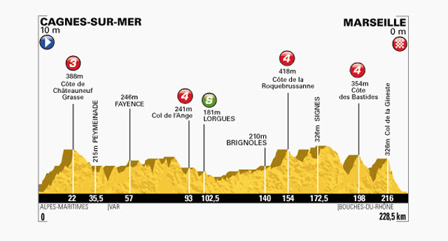

Tour de France 2013
Stage 1
29 Jun 2013
Porto Vecchio to Bastia
212km
Doing away with the traditional prologue, or short time-trial, is designed to showcase the stunning beauty of Corsica but also make the first wearer of the 100th yellow jersey work for the privilege.
The race opener is 212 km long and undulates for the first third of the course. After the early breakaways, the teams with top sprinters, like Mark Cavendish, Andre Greipel and Matt Goss will be expected to take over the chase in a bid to set up an anticipated bunch sprint finish in Bastia.
SBS 10:00PM AEST
Stage 2
30 Jun 2013
Bastia to Ajaccio
154km
The overnight race leader will have to dig deep if he is to keep the yellow jersey at the end of stage two. The second day on the "Island of Beauty" climbs steadily from the start and drags the peloton over two mountain passes, of 5.2 km and 4.6 km-long respectively, before a long descent towards Ajaccio.
To maintain the suspense and give the sprinters food for thought, organisers have thrown a small climb 12 km before the finish line into the mix.
SBS 10:00PM AEST
Stage 3
1 Jul 2013
Ajaccio to Calvi
145km
Although short, the 145 km third stage from Ajaccio to Calvi -- rumoured to be the birthplace of explorer Christopher Columbus -- could host a thrilling battle between the "punchers" who excel on small, punchy climbs. There is barely a metre of flat road, meaning the likes of Thomas Voeckler, Sylvain Chavanel, Samuel Sanchez or Simon Gerrans could have the stage marked.
After 50 km the field tackles the first of two climbs, the 7.5 km-long Col de San Martino, before racing over undulating, technical terrain before tackling the second climb, the 3.3 km-long Col de Marsolino. The summit is 13 km from the finish.
SBS 10:00PM AEST
Stage 4
2 Jul 2013
Nice to Nice
25km (TTT)
The first time-trial of the race is a team affair, meaning the finishing times are taken from when the fifth rider crosses the finish line in Nice. It is only 25 km long but the short distance will be welcomed after a stressful three days on Corsica.
The Tour de France will not be won here but time gaps between the yellow jersey protagonists will be expected.
SBS 11:00PM AEST
Stage 5
3 Jul 2013
Cagnes-Sur-Mer to Marseille
228.5km
Beginning in Cagnes-sur-Mer just outside Antibes, stage five is long, undulating and will be made even tougher by the likely crosswinds blowing off the coast.
A sprint finish is a possibility, however the sprinters and their teams could be pushed into using up precious reserves on the Col de la Gineste, whose summit is 12 km from the finish line in Marseille.

SBS 10:00PM AEST
Stage 6
4 Jul 2013
Aix-en-Provence to Montpellier
176.5km
On paper, stage six is flat, uncomplicated and at 176.5 km not overly long. The road from Aix to Montpellier, however, is near the coast and could be subject to crosswinds or headwinds, especially close to Saint Gilles where the wind usually blows in from a southerly direction.
The risk of being caught out by the unforgiving pace of a leading echelon remains for the yellow jersey contenders, meaning the likes of Alberto Contador, Chris Froome and Cadel Evans -- as well as their key team-mates -- will look to stay out of danger by staying near the front of the peloton with the spinters' teams.
SBS 10:00PM AEST
Stage 7
5 Jul 2013
Montpellier to Albi
205.5km
After a week of giving the sprinters a chance to shine, stage seven is a warm-up for the Pyreneean stages to come. It features a total of four categorised climbs, although the category four Cote de Teillet -- whose summit is 34.5 km from the finish -- should be too far from the finish to be used as a springboard for a "puncher" with victory ambitions.
After a week of racing, the yellow jersey contenders and teams with sprinters could give their tacit agreement for a breakaway to go all the way.
SBS 10:00PM AEST
Stage 8
6 Jul 2013
Castres to Ax-Trois-Domaines
195km
The first stage of the race in the high mountains is a 195 km ride to Ax-Trois-Domaines in the Pyrenees and features a total of 23.1 km of climbing at an average gradient of 8.1 percent. After a relatively flat 150 km, the peloton tackles the 15.3 km climb to the Porte de Pailheres -- a notoriously difficult ascent with some passages surpassing 10 percent.
A long descent leads to the foot of the 7.8 km-long climb to the finish. Although the yellow jersey contenders should gain a first glimpse of their rivals' strengths and weaknesses, the specialist climbers with no overall victory ambitions could steal the show.
SBS 10:00PM AEST
Stage 9
7 Jul 2013
Saint-Girons to Bagneres-De-Bigorre
168.5km
Although missing the most difficult "unclassified" (hors categorie) climbs, stage nine has five categorised climbs and is the most difficult of the two Pyrenean stages.
With a downhill finish, it should have little attraction for the yellow jersey contenders -- at least in theory. That should pave the way for a breakaway which, if they collaborate sufficiently, could go all or most of the way before battling for the win in Bagneres.
SBS 10:00PM AEST
Stage 10
9 Jul 2013
Saint-Gildas-des-Bois to Saint Malo
197km
After the first rest day and a long transfer to southern Brittany, the race resumes with a virtually pancake-flat 10th stage to Saint Malo which is all but guaranteed to end in a bunch or small group sprint.
SBS 10:00PM AEST
Stage 11
10 Jul 2013
Avranches to Mont Saint Michel
33km (TT)
The race's first individual time trial -- known as the "race of truth" -- should indicate which yellow jersey contenders are truly on form. At 33 km long, stage 11 is fairly short and so the time gaps at the finish should not be extreme.
Apart from a tight bend in Ducy (9.5 km), there are few technical difficulties but the peloton, which starts at intervals of two minutes then three minutes for the final riders, could have to deal with crosswinds as they ride towards the world famous Mont Saint Michel.
SBS 10:00PM AEST
Stage 12
11 Jul 2013
Fougeres to Tours
218km
On paper, the 218 km ride from Fougeres to Tours is a virtual straight line which cuts diagonally across France towards the Alps. The stage features few climbs, little technical difficulty and looks to have sprint finish written all over it.
SBS 10:00PM AEST
Stage 13
12 Jul 2013
Tours to Saint-Amand-Montrond
173km
With the Alps imminent, organisers have given the sprinters and their teams a final chance to shine. There is only one climb -- the category four Cote de Crotz climb (1.2 km) -- but this stage is virtually guaranteed to finish in a bunch or group sprint for the line.
SBS 10:00PM AEST
Stage 14
13 Jul 2013
Saint-Pourcain-Sur-Sioule to Lyon
191km
After the straightforward stages of previous days, armchair fans should be glued to their televisions for a stage which should be hotly contested.
Seven "punchy" climbs, ranging from 1.6 to 6.3 km in length, should entice attacks especially with the final ascent, the 1.8 km Croix-Rousse, coming only 10 km from the finish.
SBS 10:00PM AEST
Stage 15
14 Jul 2013
Givors to Mont Ventoux
242.5km
At 242.5 km long, stage 15 is long and so should entice a breakaway. But with the prestige of a stage victory atop the legendary Mont Ventoux -- the theatre of both tragedy and dreams on the race -- they are unlikely to be afforded too much ground before the peloton containing the yellow jersey favourites reaches the foot of the final, 20.8 km ascent. The final two kilometres of the climb, where the gradient reaches 10 percent, should be decisive for the stage win.
SBS 10:00PM AEST
Stage 16
16 Jul 2013
Vaison-La-Romaine to Gap
168km
Although not a "classic" Alpine stage, the 168 km ride to Gap, held after the second rest day, is not without danger. Only three categorised climbs feature but the approach into Gap, as now retired Spaniard Joseba Beloki would testify, can be tricky.
While trying to distance US rival Lance Armstrong in 2003, former ONCE rider Beloki crashed on the tricky Rochette descent and suffered a hip injury which severely compromised the rest of his career. Those with strong downhill skills, like Cadel Evans, can theoretically put the pressure on those who do not.
SBS 10:00PM AEST
Stage 17
17 Jul 2013
Embrun to Chorges
32km (TT)
What the stage 17 time trial lacks in distance will be made up for by the difficulty of its two climbs -- the 6.4km Cote de Puy Sanieres and the 6.9 km Cote de Reallon -- on a scenic route above the spectacular Lake of Serre-Poncon.
Both are inside the first 20 km of the 32 km race against the clock and will have a small say in deciding this year's yellow jersey. The contenders who have managed to recover from the efforts of previous days will have to conjure their best combination of power and climbing skills if they are to remain in the game.
SBS 10:00PM AEST
Stage 18
18 Jul 2013
Gap to Alpe d'Huez
168.5km
The first of three consecutive days in the Alps, stage 18 features six categorised climbs including two "unclassified" ascents of the legendary Alpe d'Huez. After the third climb (Col d'Ornon), where the first attacks could be launched, the peloton will begin the first ascent of the Alpe and its famous 21 hairpin bends.
The short (3.8 km) but exposed Col de la Sarenne follows before a long descent leads to the foot of the Alpe for a second ascension which should be led by the remnants of an elite group of protagonists.
SBS 10:00PM AEST
Stage 19
19 Jul 2013
Bourg d'Oisans to Le Grand Bornand
204.5km
Arguably the worst possible stage for the non-climbers, stage 19 begins with two whopping ascensions: the Col du Glandon (21.6 km) and the Col de la Madeleine (19.2 km), before finishing with a series of smaller climbs on the way to the downhill finish at Le Grand Bornand. This is possibly a stage for breakaway riders who can climb but that prospect could change depending on how the remaining yellow jersey contenders are placed.

SBS 10:00PM AEST
Stage 20
20 Jul 2013
Annecy to Annecy-Semnoz
125km
On paper, a 125 km-long stage is easy for any professional rider but the peloton is likely to make up for the short distance by increasing the intensity on what could be the last opportunity for any remaining yellow jersey candidates.
There are six climbs in total, including the category one Mont Revard (15.9 km) and the unclassified ascent to Annecy-Semnoz, a 10.8km ascension with a punishing gradient of 8.5 percent, and some passages at 10.5.

SBS 10:00PM AEST
Stage 21
21 Jul 2013
Versailles to Paris Champs Elysees
133.5km
A rare nocturnal start for the final stage into Paris will add some innovation to this year's finale. Although it will be a long day for the riders, they are unlikely to sway from celebrating their three-week campaign on the way from Versailles to Paris before cranking up the pace once inside the capital.
The race really begins on the first of the 10 laps around the city's most famous landmarks and a likely sprint finish on the Champs Elysees.
SBS 2:00AM AEST